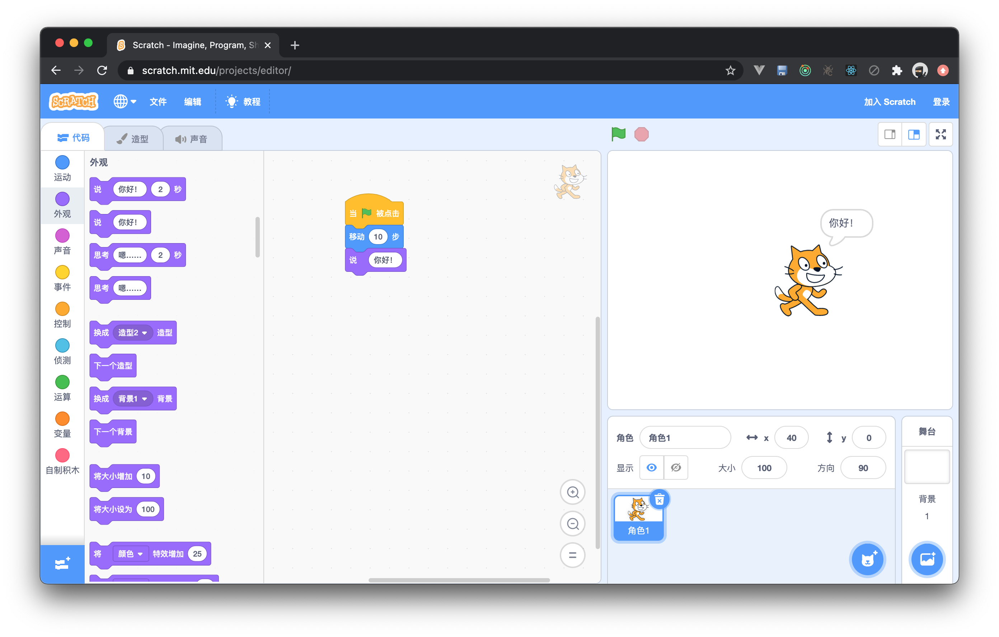
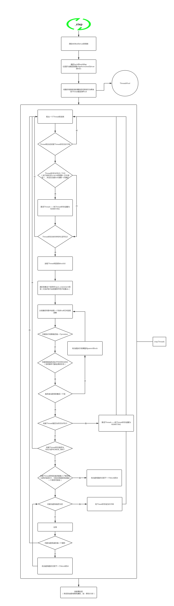

先引用一段来自基维百科对scratch的解释
Scratch是麻省理工媒体实验室终身幼稚园组开发的一套电脑程序开发平台，目前在在150多个国家/地区使用，并提供60多种语言版本。由Mitchel Resnick和Andrés Monroy-Hernández创立。
它大概长这样⬇️

它一度进入编程语言排行榜第20名。
- 对于用户来说：它功能强大，上手简单。使用自然语言+一点点逻辑就能让里面的文字和角色动起来，高阶玩家甚至用它做小游戏。甚至有传言某游戏公司的策划拿它做 demo。
- 对于技术来说：它架构复杂，扩展性强。市面上有相当数量的少儿编程教育公司（不低于20家）基于它或基于它的技术二次开发。当然我任职的公司也不例外。
架构复杂
scratch-gui是它的主包，reactjs编写。
然后是其他软件包负责它的各个模块化的功能
- scratch-vm 负责scratch的工程运行、序列化、反序列化等
- scratch-blocks scratch的代码块的定义以及配置等，基于google的Blockly开发
- scratch-audio 用于处理scratch的音频功能，播放、声音特效等
- scratch-l10n scratch本地化的文本配置
- scratch-paint 造型是scratch的一大特色，它用于编辑位图和矢量图
- scratch-parser 用于解析scratch的json或zip文件，并校验json是否非法
- scratch-render scratch绘制角色的核心库，并处理角色特效、角色碰撞等逻辑
- scratch-storage 用于scratch的I/O，定义了从哪里加载scratch资源，并且它可以很方便地进行扩展
- scratch-svg-renderer scratch专门用于处理svg绘制的库（比如去除矢量图周围无效的透明部分）
在上一篇blockly初探中我们大致了解了blockly，scratch-blocks和它也基本相同，肉眼可见的改动就是修改了所有类型的块的绘制指令，相较于blockly默认的UI顺眼了不少。其他的改动就是些scratch定制化的改动了，比如增加了一种叫scratchBubbleComment的组件，还为scratch做了定制化的toolbox等等。
scratch-vm
谈起scratch-vm有一种老生常谈的感觉，从18年入职公司起就断断续续的接触这个东西，算不上精通，但几乎每个文件都被我打开扫描过。但是对于没有接触过它的人，还是有些许神秘的。你初次使用，就会不经好奇，它是如何解析代码的？如何运行的？forever如何实现的？等待如何实现的？
target
scratch中角色对应了target，角色的造型、坐标声音等信息都记录在target上
AST（抽象语法树）
AST全称是abstract syntax tree，用我自己的理解它就是对代码的抽象描述。放到scratch也不例外，scratch花花绿绿的代码块是无法被直接运行的，它在被编辑的过程中，会被解析成一个map结构的数据。代码块与代码块之间通过链表结构关联起来，再通过事件，来启动代码的执行。
1 | { |
- opcode映射了块的真实行为，可能是把一个target的x坐标+10，也可能是返回了系统时间，甚至可能请求了一个接口
- inputs像是函数的入参，入参是开放的，可嵌入代码块的
- fields则像是这个块的枚举值，只有那么几个
- next描述了这个块的下一个块
- topLevel描述它是否一个顶级块
- parent是它的上一个块或父级块的id
Thread
scratch中有个叫thread的class，它用于描述一组代码块的运行状态，它有两个核心属性
- stack
- status
status描述了线程的当前状态，如：running、yield、promise pending、done。
stack能够看出当前这个线程运行到哪个块了。它是一个数组，能够描述嵌套的代码块，如一个普通的代码块没有嵌套，那stack应该是['_cnl::5wW1(~-P~-+l8.']这样，如果是一个if块，并运行到if内了，应该是['_cnl::5wW1(~-P~-+l8.', '1(~-P~-+l8._cnl::5wW']。
setInterval
整个scratch工程的有效代码块都被转译成AST然后创建Thead，放到线程池中，并使用setInterval来对线程池进行遍历执行，若其中一个块在执行时将线程状态改成了yield，那本轮执行将跳过（这里不讨论scratch的涡轮模式）这个线程。线程遍历完成，如果本轮执行有块修改了角色外观需要重绘角色，scratch则会去绘制角色。setInterval的间隔时间是多少呢，scratch默认设置为1000/30，即一秒钟执行30次，那么如果你在这期间去修改角色坐标和大小等，那么动画是不是就产生了。
这块基本就是scratch运行的核心逻辑，但是其中不乏有很多细节处理，我将其画成了一个不算怎么直观流程图出来：
